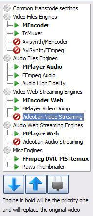

VLC (Videolan Codec) is a good choice for playing web streaming content. VLC is available for almost every platform including Windows, Linux and MacOsX. VLC version 0.9.8a works well, later versions may have issues.
After installing VLC you have to restart UMS and enable the VLC engine. In UMS go to menu "transcoding settings". Select "VLC" in the menu on the left side and press the plug-button to enable the engine. After that do the same with "videolan audio streaming". You can use the blue arrow-buttons to change the priority of engines. If you prefer VLC as default streaming engine, move VLC to the top position. Press the save button and restart UMS.

Use preferred filter tweaker for Windows 7 and Windows 8 to change from preferred Microsoft DTV/DVD Decoder to another